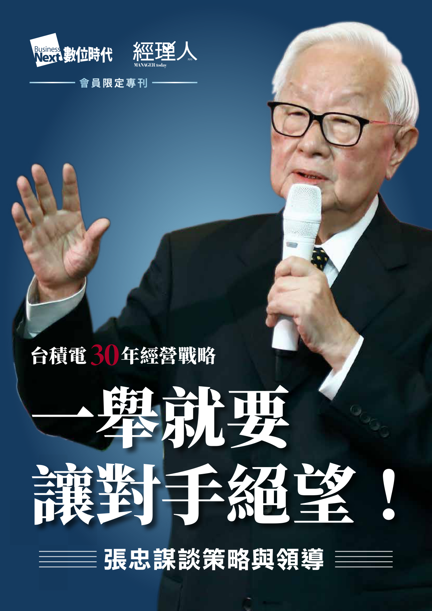
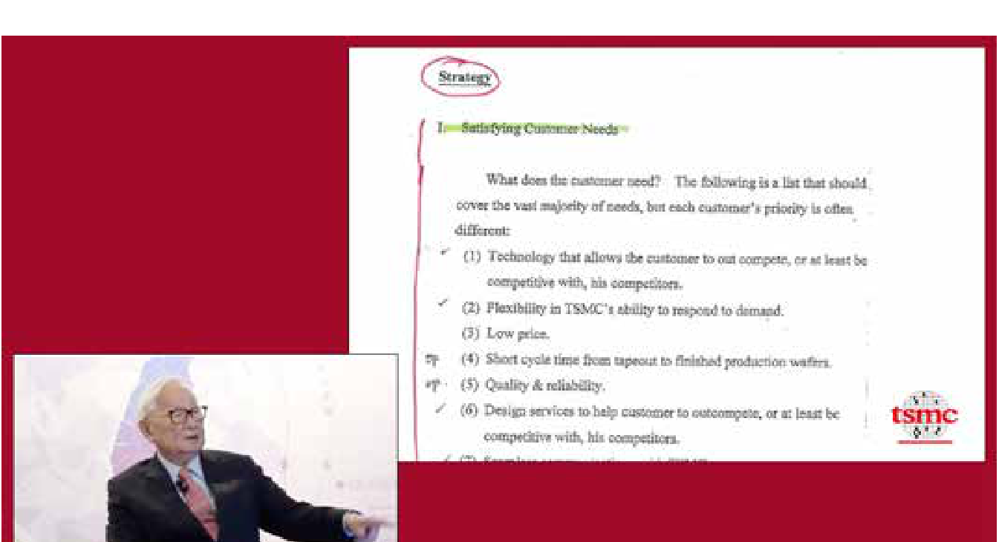

張忠謀以「客戶是誰」開創晶圓代工商業模式，並以「一舉讓對手絕望」的策略與 60 年基本功鍛造世界級台積電

| 四大核心支柱 | 關鍵經營法則與實戰心法 | 代表性量化數據 |
|---|---|---|
| 1. 商業模式革新 Ch 01 (p.7-8) |
不以「產品是什麼」定義，而以「客戶是誰（半導體公司）」定義「半導體製造服務」，取得 First & Last Look。 | >20% ROE 目標 2010 營收 130 億美元 |
| 2. 致勝競爭策略 Ch 01, 03 |
「一舉就要讓對手絕望」（1974 TTL 持續降價學習曲線）；新官先別談策略；訂好 Who / What / When (3W) 即可回家睡午覺。 | 半導體 50%+ 毛利 威爾許 5年前兩大 |
| 3. 總經理六基本功 Ch 01, 02, 04 |
持續鑽研技術、述你所知簡報、客製品定位、行銷第一與訂價能力、開會不記筆記專注看對方、從不帶老班底。 | 訂價抵 1,000 工程師 CEO 薪資 50x / 400x |
| 4. 治理・循環・學習 Ch 03, 05-07 |
直通 CEO 創新上訴權、雙首長平行制；留美 36 年帶回世界觀與謙虛、人才循環；有目標/有紀律/有計畫學習。 | 年投資 3,000 億台幣 每日閱讀 2–4 小時 |
① 本頁結論：張忠謀之所以能帶領台積電從 120 人走向 5 萬人世界霸主，核心在於將「六大基本功、3W 策略、以客戶定義的商業模式、以及世界觀終身學習」融為一體。
② 補充說明：專刊共收錄 7 篇核心文獻（p.2 目錄），涵蓋 1998 年塵封 20 年的手寫機密策略投影片、清大 60 年總經理的學習演講、三三會 3W 原則與雙首長制、以及台美人才循環與三大學習祕訣。
③ 下一頁轉場：了解全書四大支柱後，我們翻到下一頁（Slide 02），從時間軸與全書架構圖看看張忠謀這 60 年總經理功力是如何一步步累積起來的。
從 20 歲 50 股 IBM 股票啟蒙、德州儀器 25 年歷練到 54 歲創立台積電，全書 7 大篇章完整串聯 60 年學習曲線
| 原書章節 | 篇章主題與演講場合 | 本章解決的核心經營問題與關鍵證據 | 對應簡報頁碼 |
|---|---|---|---|
| Ch 01 (p.3-8) | 藏20年手稿，揭密台積電致勝商業模式（玉山科技協會） | 定義「六大基礎能力 ➔ 策略 ➔ 商業模式」三層架構；公開 1998 唯一手寫策略投影片。 | Slides 03–09, 11–12 |
| Ch 02 (p.9-14) | 清大演講完整實錄：60年「總經理的學習」（清華大學） | 1964 初任 TI 總經理破局演說、百萬美元獎勵 10 美元綠郵票、CEO 內外連結與會後 4 大 QA。 | Slides 06, 08, 16 |
| Ch 03 (p.15-17) | 掌管台積電 30 年，都靠 3W 原則（三三會演講） | 獎賞賺錢創新、不罰虧本創新（直通 CEO 上訴權）；策略 3W 原則；雙首長平行制與 3,000 億投資。 | Slides 10, 13 |
| Ch 04 (p.18-20) | 當了 60 年總經理學到的 2 大管理心法（清大精煉） | 跑遍美國 48 州拜訪客戶；新任總經理先別談策略（先凝聚團隊了解體制）；高品質支撐高價格。 | Slides 06, 08, 10 |
| Ch 05–06 (p.21-25) | 別將讀台大視為人生巔峰 ＆ 闖蕩美國 36 年國際觀（TCA / ATD） | 破除 18 歲台大巔峰迷思；美國 36 年帶回「世界觀」與「謙虛 (Modesty)」；以人才循環訓練人才。 | Slide 14 |
| Ch 07 (p.26-27) | 張忠謀的 3 個學習祕訣（對標杜拉克三年式主題學習） | 1. 有目標（跟上產業防 10-15 年失業）；2. 有紀律（日讀 2-4 小時，客戶筆記雙週溫習）；3. 有計畫（結交大師）。 | Slide 15 |
① 本頁結論：張忠謀 60 年總經理生涯分為「留美 36 年鍛造基本功與世界觀」及「回台 30 餘年應用商業模式與策略」兩大階段。
② 補充說明：20 歲父親送 50 股 IBM 股票（當時每股約 100 美元），他因此常跑圖書館看財報，學會 P/E（本益比）與 P/B（股價淨值比），並幽默說王建煊講「手上有股票、心中無股價」大概是沒買過股票（p.3-4）。
③ 下一頁轉場：這 7 大篇章背後有一套極為嚴密的層級邏輯——讓我們翻到 Slide 03 檢視張忠謀的「經營金字塔」。
經營能力分三層躍遷：六大基本功是根基，策略更高一層，而商業模式則站在金字塔最頂端
| 金字塔層級 | 誰能主導？ | 張忠謀核心定義與實戰判準 |
|---|---|---|
| 頂層：商業模式 (p.7–8) |
創始人 (Founder) 或舊模式創新者 |
54歲創台積電時已不需學基礎，而是應用。商業模式比策略更高一層，以「客戶是誰」為定（台積電客戶是半導體公司，提供製造服務）。 |
| 中層：競爭策略 (p.6–8, 16, 20) |
成熟期總經理 / CEO （新官上任先緩談） |
新上任總經理先別談策略，須先凝聚團隊、了解體制。出手時「一舉讓對手絕望」，並把 Who、What、When 訂好就能回家睡午覺。 |
| 底層：六基本功 (p.4–6, 10–13) |
所有事業部總經理 （33–52歲養成） |
科技業 CEO 須懂技術、簡報述你所知、把行銷當 First Priority、掌握客製品訂價權、開會看對方講話不記筆記、從不帶老班底。 |
| 基石：認知作業系統 (p.21–27) |
全體高階梯隊 （終身修煉） |
拋棄「18歲讀台大即巔峰」心態，保持世界觀與謙虛（Modesty），透過人才流動（Circulation）與每日 2–4 小時閱讀持續進化。 |
① 本頁結論：優秀總經理靠「六大基本功」站穩腳跟，卓越 CEO 靠「策略」擊潰對手，而偉大創辦人則靠「商業模式創新」定義新產業。
② 補充說明：張忠謀特別指出（p.7）：「商業模式比策略更高一層，不過機會很難得，你必須是創始人（Founder），才有辦法創造新的商業模式，或者就是從舊的商業模式創新。」
③ 下一頁轉場：接下來我們從金字塔底層的「六大基本功」開始拆解——請看 Slide 04 的第一項與第二項基本功：技術與簡報。
科技事業 CEO 必須持續鑽研技術，而有說服力的簡報唯有「相信自己所說、並只講你知道的事」
| 維度 / 案例對象 | 張忠謀觀察與原話摘錄 | 對執行長／事業部總經理的實戰啟示 |
|---|---|---|
| 技術出身 CEO （張忠謀、Pat Gelsinger） |
基辛格沒念過大學但為技術人，曾批評「Intel 前幾任 CEO 連技術人都不是，公司怎麼會做得好？」張忠謀評：「我覺得他講得太偏激了點，但基本上我算同意。」(p.4) | 技術出身不可吃老本，必須持續鑽研精進技術，同時把最缺的業務與市場行銷（Sales & Marketing）列為第一優先補修課。 |
| 業務／財務出身 CEO （清大演講 QA1） |
「沒有定論，比方說 Intel 的 CEO 也有財務出身的，財務出身的成功 CEO 其實不少……但最難的其實是技術。」(p.13) | 業務行銷出身升總經理，最需要學的是技術——不必做技術專家（總經理沒能力做所有面向專家），但至少要懂得跟隨技術的方向。 |
| 15 分鐘識才測試 （2015 VMware 拜訪案） |
2015 年基辛格寫信拜訪，張忠謀問：「VMware 是什麼樣的公司？」他在 15 分鐘內解釋清楚 VMware 是什麼，解釋得很好，「我就知道這傢伙是個人才。」(p.4) | 頂尖高管必須具備在 15 分鐘內將複雜商業與技術架構講得清清楚楚的結構化溝通力。 |
| 有說服力的簡報 （TI 老闆箴言＆張淑芬） |
"It doesn't matter what you talk about, but it's important to talk about what you know."（講什麼不重要，重要的是要講你知道什麼。）(p.5, p.9–10) | 簡報忌諱講自己不熟或不信的套話；唯有自己深信不疑且透徹理解的內容（述你所知），才能自然傳遞熱情與說服力。 |
① 本頁結論：科技業最難的是技術，CEO 必須持續鑽研技術方向；而簡報要有說服力，關鍵在於「自己相信」且「只講自己真正知道的事」。
② 補充說明：張忠謀在 p.4 提到 5 年前就覺得 Pat Gelsinger 有點不客氣，但 2015 年見面時 Gelsinger 用 15 分鐘把 VMware 解釋得極其透徹，讓他立刻賞識其才華。
③ 下一頁轉場：懂了技術與簡報之後，總經理馬上要面對市場競爭——你賣的到底是「商品」還是「客製品」？請看 Slide 05。
只要兩家公司做相似東西就是「商品」且一個對手就夠難應付，不如做只有你一家的「客製品」生意
| 比較維度 | 商品 / 標準型產品 (Commodity) | 客製品 / 客製化產品 (Custom) |
|---|---|---|
| 1. 麥可・波特定義 | 只要有兩家公司製作相似的東西，就是商品。(p.5) | 針對特定客戶需求量身打造，只有你一家供應。(p.5) |
| 2. 競爭難度 | 競爭者眾，「其實，一個競爭者就夠你應付了。」(p.5) | 獨佔性高，但想做客製品會牽涉到高階策略與商業模式問題。(p.5) |
| 3. 觀察消費者意義 | 「假如你是做商品，看消費者沒什麼用。」(p.5) | 「做客製品必須常常看消費者（客戶），市場就在於客戶和行銷。」(p.5) |
| 4. 定價自由度 | 價格不是由你決定，而是取決於市場與競爭對手，定價自由極少。(p.5, 12) | 定價自由相當棒，有很大定價空間，依成本、客戶需求與承擔力定價。(p.5, 12) |
| 5. 半導體實例 | 1974 年 TI 標準型 TTL 邏輯晶片（須靠學習曲線降價擊潰對手）。 | 台積電專業晶圓代工（為每位 IC 設計客戶生產專屬晶圓）。 |
① 本頁結論：CEO 必須分清楚自己賣的是標準型「商品」還是獨一無二的「客製品」；做商品價格由市場決定，做客製品才擁有定價權。
② 補充說明：張忠謀引用曾任台積電獨立董事的哈佛教授麥可・波特（Michael Porter）之定義：只要有兩家公司做相似的東西就是商品，而一個競爭者就夠難應付了（p.5）。
③ 下一頁轉場：既然客製品的市場在於「客戶和行銷」，且擁有定價空間，那麼 CEO 該如何看待業務行銷與訂價？請看 Slide 06。
沒有業務就沒生意根本活不了！CEO 必須把行銷當最高任務，且「執行長的訂價能力可抵 1,000 個工程師」
| 實戰主題 | 傳統科技主管盲點 vs. 張忠謀做法 | 關鍵細節與量化成效（專刊實錄） |
|---|---|---|
| 1. 破除技術自負迷思 (Ch 02 p.11, Ch 04 p.19) |
台灣許多科技公司與 TI 前任總經理認為：「只要產品好、技術好，客人就會自己上門，不需要 Sales & Marketing。」 | 張忠謀當頭棒喝：「沒有業務，就沒生意，當然也不會有獲利，根本活不了！」一當上主管就把行銷列為最高任務（First Priority）。 |
| 2. 1964「綠郵票」激勵案 (Ch 02 p.11) |
當時 TI 其他部門總經理都不看重業務銷售；張忠謀主動去最前線跟業務談話，開創獎勵先例。 | 提出「業務每達到 100 萬美元銷售額，就給 10 美元綠郵票（可買雜貨）」。1964 年一家三口一週伙食約 50 美元，10 美元激勵效果極大；1 年後升部門經理、1972 升 TI 半導體總經理。 |
| 3. 跑遍美國 48 州訪客 (Ch 02 p.12, Ch 04 p.19) |
張忠謀坦言並非天生喜歡跟客戶講話，但將其視為「每一個總經理都必須具備的技能與重要任務」。 | 30 幾歲學會很有信心地跟客戶說話，用舒服愉悅方式接觸客戶，不管客戶在多遠、多冷的地方都親自拜訪，足跡遍及美國 48 個州。 |
| 4. 高價值與高品質定價 (Ch 02 p.14, Ch 04 p.20) |
外界誤以為張忠謀追求「高價格」；張忠謀澄清：「我要的是高價值，高價格只是高價值（High Value）的結果。」 | 以太太張淑芬的畫為例，賣出去的價錢代表價值；最終在意的是品質（Quality），有好的品質往往會有較好的價格。連魏哲家（CC）都深知張忠謀直到退休前對訂價最有興趣。 |
① 本頁結論：技術出身的總經理必須把業務行銷當作第一要務（First Priority），並親自鍛造可抵 1,000 個工程師的「高價值訂價能力」。
② 補充說明：1964 年一家三口一星期伙食費大約 50 美元，張忠謀祭出每 100 萬美元業績獎 10 美元綠郵票的新招，讓產品市場經理大為振奮（p.11）。
③ 下一頁轉場：當總經理走出辦公室去見客戶、或主持內部會議時，該如何聽懂對方的真心話？請看 Slide 07 的「傾聽心法」。
開會傾聽時「從不寫筆記」，而是全程專注「看」對方講話與肢體語言，在腦中同步解碼四層動機
| 應用場景 | 是否做筆記？ | 具體操作方式（專刊原話） | 創造的管理與商業效益 |
|---|---|---|---|
| 場景 A：開會與當面傾聽 Ch 01 (p.6) |
❌ 從來不寫筆記 （頂多寫兩個字） |
「我總是在『看』那個人講話，我從來不寫筆記，除非我要做什麼事情、怕會議後忘了，才頂多寫兩個字。你不寫筆記，真正的注意聽，就有時間去想（動機四問）……看對方的肢體語言。」 | 穿透字面報告，精準識破部屬或談判對手的真實動機、政治意圖與肢體破綻。 |
| 場景 B：獨處閱讀客戶資訊 Ch 07 (p.27) |
✅ 一定會記筆記 （且每兩周溫習） |
「張忠謀每天至少花 2 到 4 小時閱讀。如果是讀客戶的資訊，他一定會記筆記，每個月或每兩周溫習一次，久而久之就會記住重點。」 | 見客戶時對其業務瞭若指掌，連客戶都驚嘆：「你怎麼會知道這麼多？」 |
① 本頁結論：開會時別當低頭抄筆記的記錄員，唯有抬頭專注「看」對方講話，才有腦力思考其背後的四層動機。
② 補充說明：請學員注意專刊 p.6 與 p.27 的精妙對比：張忠謀開會聽人講話「從不寫筆記」，但自己私下閱讀客戶書面資料時「一定會記筆記，而且每兩周或每個月溫習一次」。
③ 下一頁轉場：學會了如何傾聽與洞察人心，接下來總經理該如何組建團隊與領導部屬？請看 Slide 08。
老班底只會把你局限在小圈子！領導者靠「嚴格但公平無私」凝聚團隊，並靠「明確方向」贏得長久追隨
| 管理情境 | 傳統高管「帶老班底」迷思 | 張忠謀「零班底・絕對公平」鐵律 |
|---|---|---|
| 在 TI 內部調動事業部 (Ch 01 p.6) |
換單位時把舊部門的親信幹部整批帶過去助陣。 | 「在 TI 我換不同事業單位也沒有帶人過去，只會帶祕書。」 |
| 回台灣創立台積電 (Ch 01 p.6, Ch 02 p.12) |
前同事與幾位 TI 華裔同事紛紛勸說：「你沒有班底，在台灣這種地方做事不行！」並表達想跟隨加入。 | 「我剛到台灣時沒帶任何人，也沒有請他們。」認為有班底帶來帶去都是小圈子，要包容，再建一個大圈子。 |
| 對待下屬的獎懲標準 (Ch 02 p.12, Ch 04 p.19) |
對自己人寬容偏袒、對原團隊嚴苛防範，導致派系分裂。 | 「你可以相當嚴格地對待你的同仁，但是一定要公平，而且不用私人，不能有私心，才能真正凝聚團隊的能力跟士氣。」 |
① 本頁結論：領導者千萬別帶「老班底」把自己鎖在小圈子裡；唯有不用私人、絕對公平，加上正確的戰略方向，才能讓團隊死心塌地跟隨。
② 補充說明：1964 年張忠謀 33 歲升任 TI 業務單位總經理，管 3,000 人（其中 2,500 人是作業員），德州人聽說華人來當總經理很恐慌；他靠一場流利英文演說展現「工程自信＋行銷謙虛」瞬間收服人心（p.10-11）。
③ 下一頁轉場：當團隊凝聚完畢，領導者就要指出「方向（策略）」——我們進入 Section III（Slide 09），看張忠謀如何訂出「一舉讓對手絕望」的策略！
策略比基本功更高一層：善用「學習曲線」主動降價讓對手絕望，或在無人競爭領域「親手創造市場」
| 戰略維度 | 戰役一：1974 德州儀器 TTL 降價戰 (Ch 01 p.6–7) | 戰役二：1987 台積電專業晶圓代工 (Ch 03 p.16) |
|---|---|---|
| 市場競爭環境 | 標準型電晶體邏輯（TTL）有多家競爭對手，同業皆仰賴 50% 以上毛利支撐巨額研發與設計（RD）。 | 台灣第一家專業晶圓代工：「如果做一般半導體就很普通。」當時沒有競爭者，「沒有敵人就是如入無人之境」。 |
| 核心戰略難題 | 既然半導體需要 50% 以上毛利做 RD，為什麼領先者還要主動持續降價？ | 「但沒有競爭者也是個問題，因為沒有市場！」 |
| 張忠謀致勝手段 | 善用學習曲線（Learning Curve）持續降低 TTL 價格，以規模壓低成本，一舉讓對手對追趕徹底絕望。 | 將挑戰鎖定為「創造市場」——正因少了競爭者干擾，台積電有更多空間積極投入市場開發，奠定世界第一地位。 |
① 本頁結論：經營公司如同作戰，在既有市場要靠學習曲線「一舉讓對手絕望」，在藍海領域則要把握無敵人的窗口期「全力創造市場」。
② 補充說明：張忠謀在 p.7 特別提到奇異前執行長傑克・威爾許（Jack Welch）也信奉學習曲線，若事業單位 5 年內無法成為前一大或前二大就乾脆關掉。
③ 下一頁轉場：策略如此重要，那麼新官上任第一天就該馬上訂策略嗎？訂策略時用什麼工具最有效？請看 Slide 10。
新上任總經理「先別談策略」！待凝聚團隊並摸透體制後，把 Who・What・When 三個 W 訂好就能回家睡午覺
| 3W 核心要素 | 張忠謀定義與執行標準 (Ch 03 p.16) | ❌ 常見組織失敗反例 | ✅ CEO 檢核問題 |
|---|---|---|---|
| 第一個 W：Who （誰來負責） |
「要先找出主要負責的人！」（排在 3W 第一順位，有人當責策略才不會懸空）。 | 「由業務部、工程部與財會部共同負責」（多人共同負責＝沒人負責）。 | 誰是這項策略唯一成敗當責的 Owner？ |
| 第二個 W：What （做什麼事） |
「要清楚做什麼事情！」（明確界定戰略行動、資源配置與預期成果）。 | 只喊「提升競爭力、強化數位轉型」等空洞口號，無具體交付標的。 | 要交付的具體行動與量化指標（如 >20% ROE）是什麼？ |
| 第三個 W：When （何時完成） |
「最後一個 When 要訂下目標達成的時間！」 | 「盡快推動、明年陸續完成」，缺乏明確檢核時點。 | 確切的里程碑與最終達成期限是哪一天？ |
① 本頁結論：新任總經理切忌急著談策略，應先凝聚團隊並摸透體制；而好策略的執行極其精簡——訂好 Who、What、When 三個 W 即可。
② 補充說明：張忠謀在清大演講（p.13）強調：「CEO 最大的責任就是把外面的世界搬到公司裡面來，動員公司的資源來迎接外部挑戰。」
③ 下一頁轉場：比策略更高一層的，是金字塔頂端的「商業模式」——請看 Slide 11，張忠謀如何用星巴克、Google 與台積電解構商業模式！
台積電最重要的革新是商業模式：商業模式是以「客戶是誰」為定，而非以「產品是什麼」為定！
| 標竿企業 | 一般人看到的「產品表象」 | 張忠謀洞察的「真正客戶是誰」 | 商業模式創造的驚人效益 |
|---|---|---|---|
| 1. 台積電 (TSMC) (Ch 01 p.3, 7) |
晶圓製造工廠（生產半導體晶圓）。 | 客戶是「別的半導體公司」（而非電腦公司），定位為「半導體製造服務」。 | 54歲創辦時 120 人 ➔ 87歲退休 5 萬人，成為世界最大晶圓代工廠。 |
| 2. 星巴克 (Starbucks) (Ch 01 p.8) |
賣咖啡飲品的「咖啡館」。 | 張忠謀 90 年代剛回台時最崇拜的商業模式：客戶不是隨意喝杯咖啡就走的人，而是「懂得享受生活的人」。 | 把一杯原本賣 3、4 毛錢的咖啡，成功漲到 2.5 美元（逾 6 倍溢價）。 |
| 3. Google ＆ 臉書 (Ch 01 p.8) |
提供大眾免費搜尋與社交的科技平台。 | 「大家雖然都用 Google，但我們不是它的客戶，我們是它的工具！」真正的客戶是廣告主。 | 從免費工具用戶身上獲取資訊，再去做高毛利的廣告生意。 |
① 本頁結論：商業模式不是由你做什麼產品決定，而是由「誰是你的付費客戶」來決定。
② 補充說明：張忠謀在 p.8 用星巴克（3、4毛錢咖啡賣 2.5 美元給懂得享受生活的人）與 Google（免費使用者只是工具，廣告主才是客戶）完美詮釋了商業模式的威力。
③ 下一頁轉場：訂定了「專業晶圓代工」商業模式後，台積電如何用策略將其落地？請看 Slide 12——塵封 20 年首度公開的 1998 年唯一手寫機密策略手稿！
解密 1998 年唯一手寫機密策略：除低價外全面超越對手、取得 First & Last Look，2010 營收達 130 億美元

1. 取得 First and Last Look（優先及最終採購洽談權）：除了低價以外，在其他所有領域都超越對手！
2. 全員銷售文化：建立以市場行銷與服務為核心的文化，每位員工既是專業的工程師、會計師，也是銷售員（Sales person）！
| 項次 | 1998 投影片英文原稿 (I. Satisfying Customer Needs) | 張忠謀策略內涵與財務目標驗證 |
|---|---|---|
| (1) 技術 | Technology that allows the customer to out compete, or at least be competitive with, his competitors. | 提供客戶可超越對手、或至少與之匹敵的技術。 |
| (2) 彈性 | Flexibility in TSMC's ability to respond to demand. | 靈活回應客戶的產能與技術需求。 |
| (3) 價格 | Low price. | 低價（但強調除低價外，其他領域都要超越對手）。 |
| (4) 時程 | Short cycle time from tapeout to finished production wafers. | 縮短量產時程（從設計定案 Tapeout 到產出晶圓）。 |
| (5) 品質 | Quality & reliability. | 品質可靠（高良率與長期可靠度）。 |
| (6)-(7) 服務 | Design services to help customer to outcompete... & Seamless communication. | 設計服務、一站式（Turn-key）服務与可無縫溝通。 |
| 🏆 戰果 | 1998 目標：創造 >20% ROE、世界最大晶圓代工廠、2010 年營收 100 億美元。 | 2010 實績：實際營收高達 130 億美元（超標 30%）！「唯一不滿意的人，就是我老婆。」(p.8) |
① 本頁結論：1998 年手寫策略證明，台積電靠「滿足客戶 7 大需求、取得 First & Last Look 與全員銷售文化」，超額實現 >20% ROE 與 130 億美元營收。
② 補充說明：請注意手稿中第(1)、(2)、(4)、(5)、(6)、(7)項旁邊都有張忠謀手寫勾號或星號，唯獨第(3)項 Low price 沒有打勾——完美對應他在演講說的「除了低價以外，要在其他領域都超越競爭對手」（p.7-8）。
③ 下一頁轉場：隨著台積電成長為數萬人大企業，如何避免官僚扼殺創新？退休交棒又如何設計公司治理？請看 Slide 13。
建立「獎賞賺錢創新、不罰虧本創新」的直通 CEO 上訴權，並以「雙首長平行制」共管每年 3,000 億資本投資
| 治理議題 | 張忠謀核心論點與原話精粹 (Ch 03 p.16–17) | 制度設計與決策啟示 |
|---|---|---|
| 1. 台灣把 CEO 翻成「執行長」是誤解 | 「台灣把 CEO 翻譯成執行長，這是對 CEO 的誤解，CEO 應該是執行跟策略都要管，執行只是 CEO 一半的工作，因為很多老闆不願意讓下面的人通通都管，只願意讓他執行一下就好。」 | 因此台積電的 CEO 叫做「總裁」，完整肩負策略擬定與經營執行雙重職責。 |
| 2. 台積電最重要的事：資本投資 | 「台積電最重要的事是資本投資。」每年有 3,000 多億元資本投資，由總裁擬定計畫交每年四次董事會通過（每次提 700～800 億元），董事長要為這些計畫護航。 | 確立雙首長分工：總裁對外拿生意並擬定 3,000 億投資，董事長在董事會全力護航。 |
| 3. 建言林全院長：創新 vs. 分配 | 針對政府「創新、就業、分配」口號，建言不能缺少「成長」——因為創新和分配是有衝突的，鼓勵創新必須給高獎勵（讓創新者收入比非創新者多），而有成長才能解決就業問題。 | 企業若搞齊頭式分配就無法激發創新；必須重賞成功賺錢的創新以驅動成長。 |
① 本頁結論：要維持大企業創新活力，必須「重賞成功創新、不罰失敗創新並開放直通 CEO 上訴」；而 CEO 必須同時管策略與執行。
② 補充說明：張忠謀在 p.15 也坦言，54 歲剛回台灣時，他花了幾乎 10 年的時間在學習適應台灣的習慣、風俗與人事關係。
③ 下一頁轉場：既然張忠謀前 36 年都在美國，他從美國帶回台灣最珍貴的資產究竟是什麼？請看 Slide 14。
別再把「讀台大」視為 18 歲人生巔峰！張忠謀帶給台積電的是「世界觀、謙虛與人才循環（Circulation）」
| 核心維度 | 台灣常見盲點 / 現況限制 | 張忠謀「美國 36 年體悟」與台積電實踐 |
|---|---|---|
| 1. 學歷與謙虛 (Modesty) (p.22, 24) |
考取台大好像就是一生巔峰（18歲達人生巔峰），很多 50～60 歲的人還一直講「我在台大的時候怎樣……」。 | 在美國從沒聽過 50～60 歲的人提哈佛或耶魯，「我是 MIT 的，畢業後我就不提 MIT 了！I think that is modesty!」因為世界很大、強者如雲，自然學會謙虛。 |
| 2. 創辦台積電的核心資產 (p.22–25) |
外界以為張忠謀從美國帶回半導體先進技術。 | 「我回台灣第一個工作是工研院院長，我帶回來的不是什麼技術，我老早就不搞技術了，帶回來最重要的其實是『世界觀』（智慧財產）！」 |
| 3. 職能循環難易度差異 (p.23, 25) |
以為所有職位都能用相同速度跨國或跨公司流動。 | 財務、會計（Financial accounting）、人資等職務較有機會達到人才循環；技術人才（Technical people）因須長時間待在實驗室，流動較困難。 |
① 本頁結論：領導者切勿停留在過去的學歷光環；唯有具備「世界觀」與「謙虛（Modesty）」，並透過「人才循環（Training by Circulation）」歷練，才能打造世界級梯隊。
② 補充說明：台積電 20 幾位副總以上高管，至少一半經歷「台灣大學 ➔ 美國留學工作 ➔ 回台從基層工程師一步步升副總」的完整循環（p.21, 25）。
③ 下一頁轉場：為什麼杜拉克 60 歲後能寫出 3/4 著作、張忠謀 55 歲才創台積電卻能始終走在產業最尖端？請看 Slide 15 的「3 個學習祕訣」。
學習不是消遣而是嚴肅的事！張忠謀靠「有目標、有紀律日讀 2–4 小時、有計畫結交大師」領航產業尖端
| 比較維度 | 管理大師 彼得・杜拉克 (Peter Drucker) | 台積電創辦人 張忠謀 (Morris Chang) |
|---|---|---|
| 高齡創舉與職涯突破 (p.26) |
一生出版 39 本著作，其中四分之三（約 30 本）完成在 60 歲之後，享壽 96 歲。 | 54/55 歲才創立台積電，開啟「晶圓代工」全新商業模式，掌舵 30 餘年至 87 歲退休。 |
| 主題式深度學習法 (p.26–27) |
持續奉行「三年式主題學習」超過 60 年，不間斷研究社會、政治、美術、歷史等各種主題。 | 每天花 2–4 小時閱讀；讀一般書籍不漫無目的瀏覽，而是在一段時間內大量、專注研讀某個領域（如「康熙皇朝」、「全球經濟情勢」）並發表感想。 |
| 人脈與客戶學習法 (p.27) |
跨學科請益各領域頂尖學者與企業實踐者。 | 讀客戶資訊必記筆記並每兩周/每月溫習；先打好專業知識與獨立思考基礎，再與克魯曼、麥可・波特等大師深度對談與共事。 |
① 本頁結論：年齡從來不是職涯天花板；把學習當成「嚴肅的事」，落實每日 2–4 小時有紀律閱讀與主題深讀，才能在科技巨變中立於不敗。
② 補充說明：張忠謀強調，想跟克魯曼、波特這類頂尖專業人士交往前，自己必須先打好「專業知識＋獨立思考能力」的基礎，否則談話根本不會有交集（p.27）。
③ 下一頁轉場：最後我們來到 Slide 16，完整檢視清華大學演講會後 4 大精彩 QA，並將全書濃縮為執行長立即可執行的 30-60-90 天行動表！
清大演講 4 大 QA 點破「90% 跨領域斜槓 vs 10% 專精」與商學院差距，並轉化為 CEO 90 天落地藍圖
| 清大現場提問 (Q1–Q4) | 張忠謀原話回答精髓 (p.13–14) | 一句話行動啟示 |
|---|---|---|
| Q1：如果是業務行銷出身的人，升為總經理，要學哪些能力？ | 「那我想他要學的是技術。他不一定要做一個技術專家，一個總經理絕對不能夠做所有面向的專家，他沒有這個能力，但業務出身的總經理至少要懂得跟隨技術的方向。技術或業務出身誰適合做總經理沒有定論（如 Intel 也有財務出身的成功 CEO），最難的其實是技術。」 | 技術出身補行銷訂價；業務財務出身補技術方向判斷力。 |
| Q2：史丹佛、MIT 把領域軟化，跨領域學習（斜槓）是否重要？ | 「我贊成這個趨勢，大學要念廣一點，90% 的人可以跨領域學習。但對於有些想終身投入特別的領域的人，約 5%～10% 的大學生來說，還是不要太廣。」 | 90% 管理與通才走跨領域斜槓；5–10% 頂尖科研專才保持深耕。 |
| Q3：怎麼樣才能把價格穩定甚至提高？有無短跟長期策略分別？ | 「所謂高價格，請不要誤會，其實我要的是高價值，高價格只是高價值（High Value）的結果。比方說我太太的一幅畫，真正有意義的價格就是賣出去的價錢，代表一個價值。半導體定價有主觀層面（看客戶能出多少、承擔多少）。直到退休，定價一直是我最有興趣的題目，CC（魏哲家）最清楚。」 | 先創造客戶不可替代的高價值与高品質，高價格自然隨之而來。 |
| Q4：台灣、美國在 MBA 上差距很大，最大原因在哪？如何縮短？ | 「我想台灣沒有太多世界級的企業，所以不太需要世界級的商學院，進而影響商學院的素質，兩者互相將程度往下拉。」（張忠謀於哈佛、MIT、史丹佛與台大、政大開放提問，從提問程度比較得出此結論）。 | 主動吸收國際一流經營教材，鍛造世界觀與高深度提問力。 |
① 本頁結論：張忠謀透過清大 4 大 QA 提醒我們：總經理必須技術與行銷兼備、創造高價值定價，並以跨領域視野與世界級標準自我要求。
② 補充說明：讀完本簡報後可以立刻應用的一件事：下次主持會議時，把筆放下專注「看」對方講話（思考動機四問），並在會後用「Who、What、When」三個 W 確認所有決議！
③ 結語與返回入口網：點擊右上角「🏠 返回執行長入口網」，即可使用全域關鍵字搜尋或勾選您的 30-60-90 天落地檢核表。